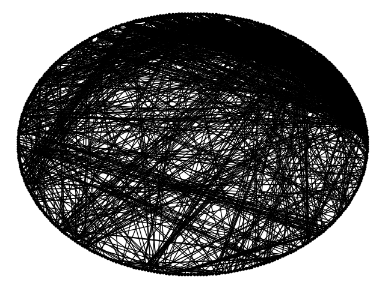

Protein interactions responsible for human sleep cycle

Last summer, under the able supervision of Dr. Leonid Chindelevitch, I had worked on a novel idea based on teh dominating set problem to identify the protein interactions necessary for the human circadian rhythm.